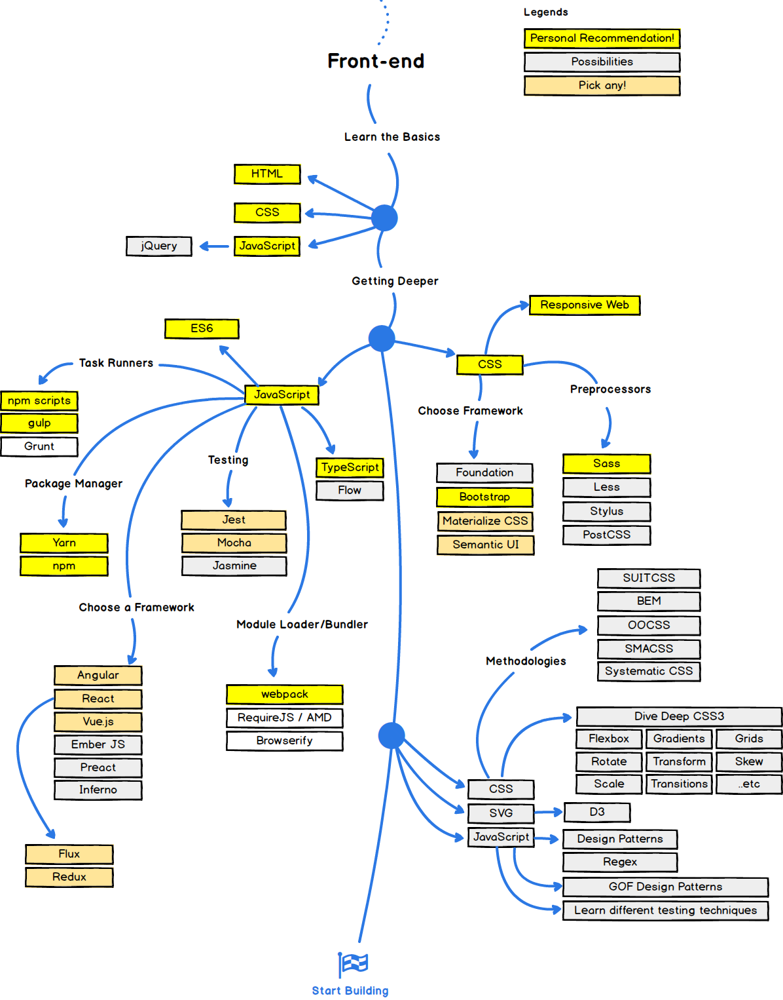

First of all what do I know and what am I gonna learn. Let's add image from friend and analyze it.

Now I can set my learning process to learn from basics concepts of web developing up to more difficult and complex ideas.
For as little as I know starting from complete basics will be best. First I setted up Visual Studio Code for easier coding with real live preview and created repository on GitHub. That lead me to: "Od czego zacząć?" , which is really interesting file providing various websites to help newbies like me. At this point i decided on creating learning schedule not to get lost in case of giving up as I mostly do.
Due to lack of any job right now i plan on working few hours a day to see how much I can improve.
My learning order will be then:
So basically what is the difference between things I learned in primary school and ones I am going to learn now?
Generally in 2014 HTML was updated to version 5 facilitating work for web developers.
So many inprovements were introduced that it would take whole page to write about them.
But this document is for me to learn how to code and not to write a lot so here is a link to learn more about HTML improvement over years.
I started with Codecademy basic tutorial for HTML. Iam not going to write much about content I found there but highly recommend to check it out here.
What i learned:
<p>, <span> and <div> tags<br> line break<ol> and unordered <ul> list